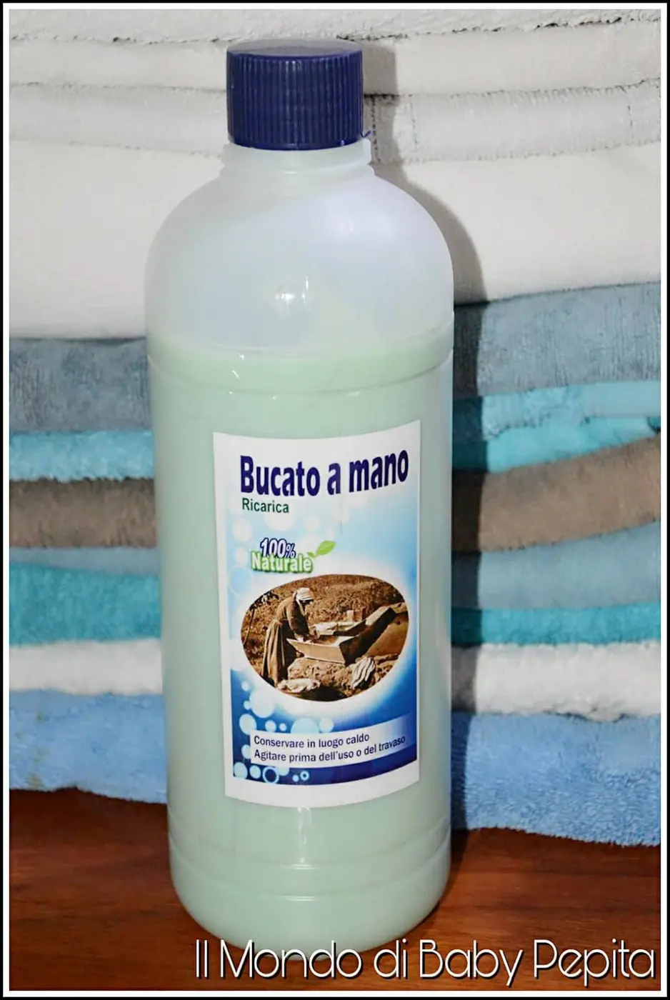
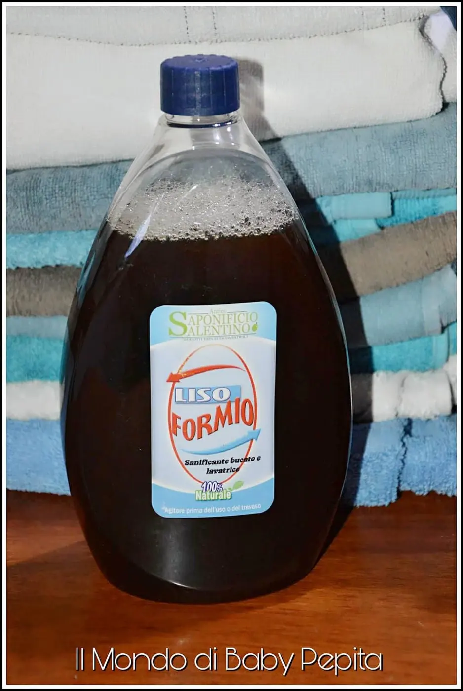
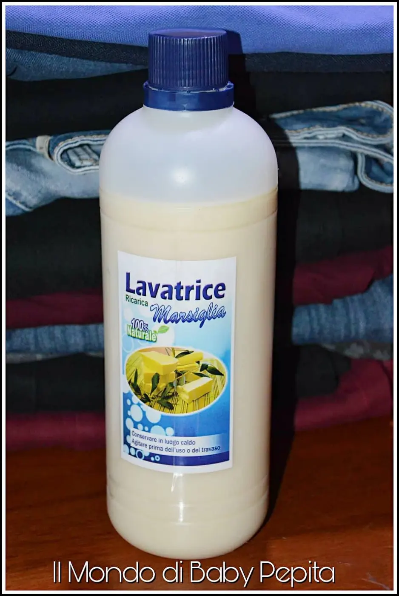
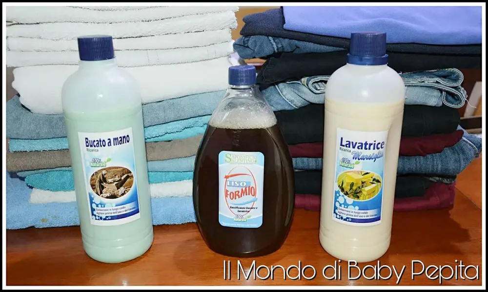

Sapone liquido: Antico Saponificio Salentino
Sapone liquido : Oggi abbiamo il piacere di ospitare nel blog un'azienda italiana 100% prodotti naturali.
È un'azienda specializzata nell'igiene e pulizia per la persona, per la casa e anche per il bucato.
Ultimamente parliamo spesso di articoli naturali privi di parabeni e del tutto bio e quest'azienda rientra in quella categoria.
Il marchio in questione si chiama ANTICO SAPONIFICIO SALENTINO.
I detergenti dell'antico saponificio sono derivati dall'olio d'oliva estratto dall'olive del Salento in Puglia.
Quindi perchè scegliere questo articolo per l'igiene della nostra persona e per la nostra casa? Perché per produrre i detergenti vengono utilizzati molecole naturali contenenti appunto nell'olio d'oliva.
Quali sono queste molecole? Oleati, palmitati, stearati, linoleicati, alfa-linoleicati, miristicati, lauricati, glicerina ecc.
L'ideatore di tale azienda, Alessandro Malitesta, ha lavorato nei laboratori chimici di ricerca di Bologna proprio nel settore dei detergenti, e qui ha appreso tutte le fondamentali informazioni che sono alla base poi dell'azienda che ha creato.
Dunque parliamo di un'azienda con a capo una persona che sa il fatto suo e di certo avrà appeso tutte le informazioni necessarie per la pelle e la detersione.
Ho avuto modo di provare tre prodotti per il bucato:
- Bucato a mano
- Liso formio
- Lavatrice Marsiglia

BUCATO A MANO:
È un ottimo detergente adatto al lavaggio quotidiano di qualsiasi capo che non possono andare in lavatrice. Contiene proprietà ammorbidenti naturali ed è quindi privo di ammorbidenti sintetici.
Ha una fragranza pari all'1% dunque è un profumo percettibile e non eccessivo.
Istruzioni per l'uso: Utilizzare un bicchiere per ogni 3-5 kg di vestiti.
Prezzo: 6,50€

LISO FORMIO:
È un detergente sanitizzante da usare in aggiunta al detersivo per la lavatrice, sia durante il lavaggio principale sia durante l'ammollo nel caso del bucato a mano.
Non ha profumo.
Istruzioni per l'uso: Utilizzare mezzo bicchiere per ogni lavaggio in lavatrice e per ogni 5 litri di vestiti in ammollo. In modo alternativo spruzzare sugli indumenti da lavare.
Prezzo: 8,00€

LAVATRICE MARSIGLIA:
Un detergente indicato per il bucato in lavatrice, un sapone liquido.
Grazie ai principali tensioattivi consente un lavaggio sei tessuti a fondo. È possibile utilizzarlo su tutti i tipi di capi tranne che sui vestiti delicati.
È consigliabile da utilizzare per un uso di 60-90 gradi.
Istruzioni per l'uso: Utilizzare 1-2 bicchieri per ogni lavaggio di 3-5 kg.
Ha una profumazione delicata e leggerissima.
Prezzo: 6,50€

Vi consiglio di visitare il loro SITO e dare un'occhiata anche ai prodotti per l'igiene della persona e per la casa.
Per ogni ordine superiore a 60 euro la spedizione è gratuita.
